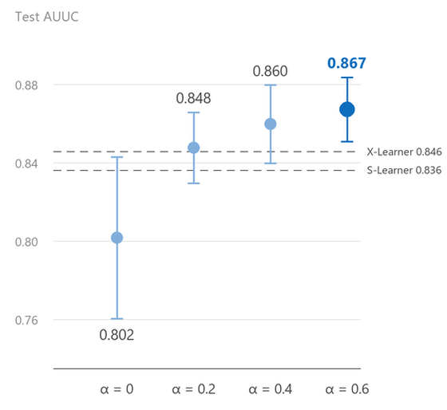

About
I'm a Master's student at Carnegie Mellon University, studying Information Systems Management, graduating in December 2026.
This summer I was an AI Engineer Intern at Whelix, a robotics startup working on cell culture automation. As their first and only AI engineer, I designed and built the company's production multi-agent platform, which ran day-to-day operations across sales, fundraising, and engineering.
Before that, I built LLM-powered tools at BASF to improve production and management efficiency. At Nanjing University, I was part of LANDS, working under Jiaqi Zheng on end-to-end optimization. My undergraduate thesis applied decision-focused learning and causal inference to reframe a classic uplift-modeling problem.
I'm drawn to Applied AI and Forward Deployed Engineer work: sitting with the people who will use a system, and taking it from demo to something that holds up under scrutiny.
Experience
Where I've shipped things
AI Engineer Intern
Whelix
- Owned AI system design end-to-end as the company's first and only AI engineer, building a production multi-agent platform from the ground up on the raw Gemini SDK, with an orchestrator that delegates to specialized sub-agents at runtime across sales, fundraising, and engineering.
- Built a fail-closed authorization layer that re-verifies on every delegation, gating CEO-only agents entrusted with live sales-pipeline and fundraising data.
- Integrated the platform with Notion, Confluence, GitHub, and Google Workspace through 30+ custom tools, with a two-layer memory that lets stateless webhook calls hold multi-turn context.
- Designed and rolled out the company's knowledge architecture: a set of linked Notion databases that became the single system of record, with one home per fact, an append-only changelog for every write, and a read/write protocol the agents follow.
- Designed a multi-agent eval harness with repeated-trial testing and structured failure logging, verifying a 60%+ tool-call reduction on a production agent flow.
Digitalization Intern, Asia-Pacific Monomers
BASF
- Designed and deployed a GPT-4o market-intelligence engine for pricing that automated bilingual (English/Chinese) news monitoring, key-information extraction, and weekly reporting, replacing a manual multi-source process.
- Owned digitalization work across a business unit (pricing, supply chain, production, and EHS) on 8+ projects, from requirements gathering on the factory floor to rollout across Asia-Pacific plants.
- Drove adoption on the ground: regularly on-site at chemical plants, working directly with operators to make sure what got built matched how the work happened.
Research Assistant
Nanjing University
- Conceived and implemented Decision-Focused Uplift Modeling, which trains uplift models on the budget-constrained ranking decision they are deployed for. On the 13.98M-row Criteo benchmark, its AUUC is 2.2–3.7% above S-Learner, X-Learner and GRF (write-up).
Projects
Things I've built end to end

realdelta: is that eval change real, or noise?
Simulated: an unchanged agent's pass rate differed by ≥2 pts in 36.8% of run pairs · 5 trials per case catch 3 broken cases of 40 85% of the time (1 trial: 13%)
An unchanged agent re-run can move its pass rate by several points, so a 4-point "improvement" may be noise. realdelta gives pass-rate intervals for repeated trials, paired comparisons and a planner for how many trials to run. I checked the intervals on a calibration grid fixed in advance. The first run failed, and the fix went through two written amendments rather than a moved threshold.

NVIDIA Video-to-Data Challenge
3rd / 19 teams · success 0.27 → 0.47 · error 55 → 37 cm · 30/30 physics checks
Turned a single third-person video into robot training data: I owned 4D human–object reconstruction for the video-only tier, with no clean ground truth to lean on. The work that mattered was making it trustworthy: a timeline search that stops objects from flipping, depth fixed along the camera's line of sight, support surfaces inferred from the objects themselves, and rules enforced in code.
Read the write-up →Frames: NVIDIA Video-to-Data Challenge dataset, CC BY 4.0; cropped, with reconstruction overlay.

Decision-Focused Uplift Modeling
AUUC 0.867 · +2.2–3.7% over S-/X-Learner and GRF · 13.98M rows
Uplift models decide who gets a coupon, yet they are trained to predict well everywhere rather than to pick the top slice a budget allows. DFUM trains for that decision with a closed-form Lagrangian dual of the top-K choice, and has the highest AUUC of the models compared on Criteo's 13.98M-row benchmark.
Read the write-up →Skills